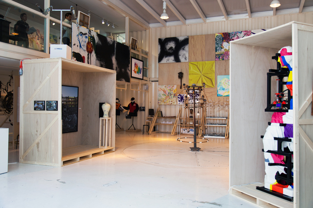

- 주최 : 경기도
- 주관 : 경기문화재단
- 후원 : 미술주간
- 협력 : 유니온아트페어, 아트플레이스, 상업화랑, 칸
- 협찬 : THE FRAME, THE SERO, BESPOKE, 한국우편사업진흥원, 제주맥주, 어반소사이어티
2019 아트경기
'2019 아트경기' 경기도 작가들의 미술시장 진입을 돕고, 미술 시장 활성화를 촉진하고자 경기도 내 다양한 지역에서 도민들이 보다 쉽게 미술품을 만날 수 있는 기회를 제공하는 사업입니다. “일상 속에서 미술품을 쉽게 접하고 소비하는 문화를 다채롭게 즐겨보자”는 기획 의도로 일반대중과 도민들이 보다 쉽고 편안하게 미술품을 감상하도록 미술장터, 캠페인전 그리고 팝업갤러리를 개최합니다.
특히, 2019 아트경기 <미술장터>는 9월 20일부터 29일까지 ‘유니온아트페어’와 협력해, 서울 성수동 에스팩토리(S Factory, A동)에서 첫 번째 장터를 개최하고, 10월 8일부터 15일까지 경기 수원에 위치한 경기상상캠퍼스내 ‘공간1986’에서 협력사업자(상업화랑, 아트플레이스, 칸)와 공동으로 두 번째 장터를 선보입니다. ‘미술장터’ 외에도 협력사업자들은 도내 공공기관 및 공공시설 순회전시를 통해 미술품 활용 촉진을 위한 <캠페인전>을 열고, <팝업갤러리>를 개최해 공모로 선정된 아트경기 작가 44명의 작품을 두루 선보일 예정입니다.
유니온아트페어
작가들이 직접 참여하고 함께 만들어가는 유니온아트페어는 동시대 예술인들의 생생한 예술현장을 보여주며 작품의 판매까지 연결하는 현장감 넘치는 현대미술 축제입니다.
아직 잘 알려지지 않은 신진작가를 발굴하고 다양한 장르 작가들의 협업을 통해 현대미술의 넓은 스펙트럼을 보여주는 예술과 축제의 다양한 층위의 결합을 시도하는 실험의 장인 동시에 다양한 전시 구성과 차별화된 연출로 미술계뿐만 아니라 대중적으로 인정받는 아트페어로 발돋움해 나가고 있습니다.
유니온아트페어는 함께 소통하고 즐길 수 있는 예술 축제로 자리매김할 것입니다.
상업화랑
2017년 을지로3가에서 전시를 시작한 상업화랑동시대 예술을 기반으로 형성되는 미술의 사회적 역할에 주목하고자 합니다. 한국 미술의 새로운 가치를 나누고자 매년 10여 회 이상 회화, 조각, 설치, 영상, 사진 등 다양한 장르의 기획전시를 기반으로 미술의 담론과 비평을 공유하는 실천적 공간을 희망합니다. 을지로에 위치한 전시장을 중심으로 자체 기획전시와 다양한 외부 활동을 진행하며, 전속작가(김은진, 박승예, 송수영, 옥정호)의 창작 및 전시활동을 지원하고 있습니다. 상업화랑은 한국 현대미술의 발전을 위하여 사회적 관심과 융합을 모색하는 전문 전시공간입니다.
아트플레이스
아트플레이스는 한국 현대미술 글로벌 프로모션을 목표로 2011년 설립되어 미술, 디자인, 건축, 테크놀로지 등 다양한 장르를 넘나들며 국내외 작가, 큐레이터, 평론가, 저널리스트, 화랑 등과 협업하며 다양한 형식의 전시, 학술심포지엄, 아트페어, 출판 등의 업무를 진행하고 있다. 자체 전시공간인 갤러리압생트(gallery absinthe)를 통해 신진 작가를 발굴하고 코리아투모로우(koreatomorrow),art369 등의 전시 플랫폼을 통해 큐레이터, 작가 발굴 중심의 미술 생태계를 구축하며 새로운 콜렉션 문화를 만드는데 기여하고 있다. 또한 정부지원사업, 기업 아트마케팅, 콜라보레이션 등 다양한 영역의 전시기획과 아트컨설팅을 주도해 나가며 예술의 외연을 넓히고 있다.
아트는 우리 삶의 질을 높이고 사람들을 행복하게 만드는 사회적 가치입니다.
KAN
| 칸KAN은 | 지난 15년간 기업, 기관의 공간조성을 위한 아트 마스터플랜 및 미술작품 기획에 주력해온 아트환경 창조기업입니다. |
| 칸KAN의 | 기업 목표는 예술과 환경을 접목한 아트 마스터플랜의 실현입니다. |
| 칸KAN의 | 임직원은 서양화, 동양화, 디자인, 영상, 건축 등을 전공한 아티스트, 디자이너들입니다. |
| 칸KAN은 | 전문가들의 창의성을 바탕으로 협업해서 공간과 환경에 예술성과 생명력을 부여합니다. |
| 칸KAN이 | 제공하는 예술적 시도가 고객기업의 환경과 브랜드를 차별화하고, 세상과의 소통을 가능케 할 것입니다. |